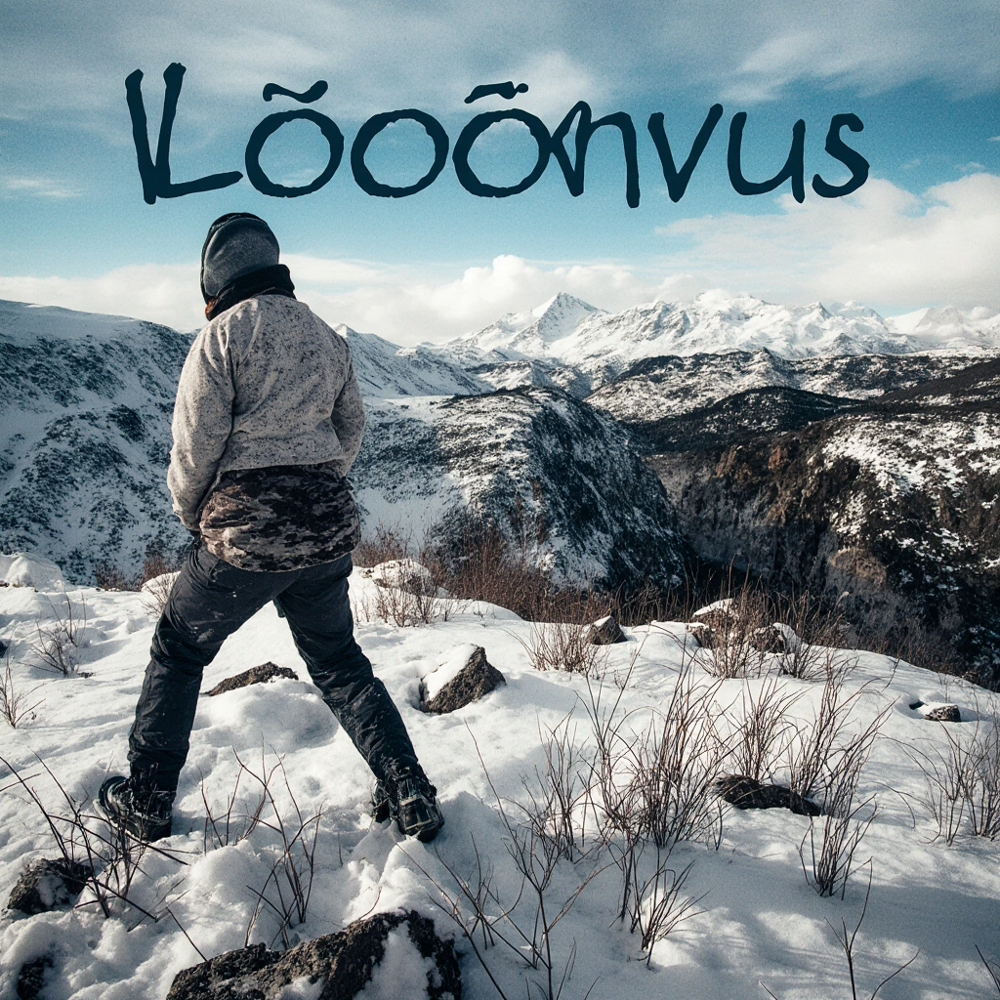
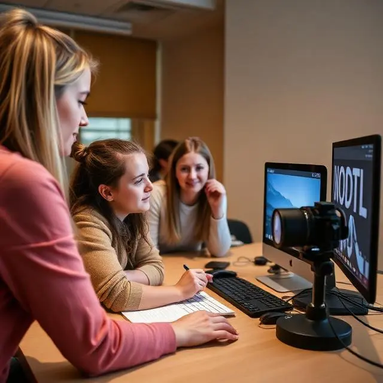
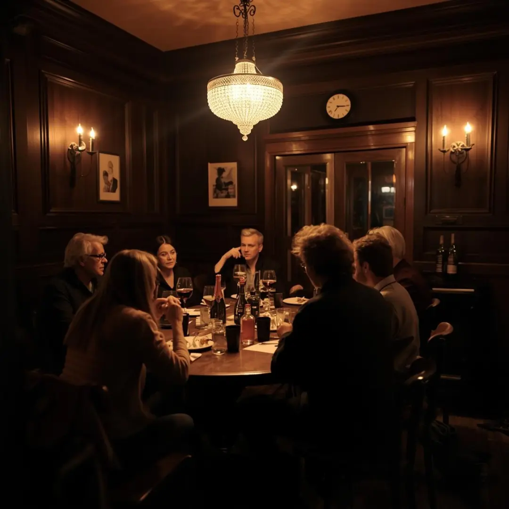
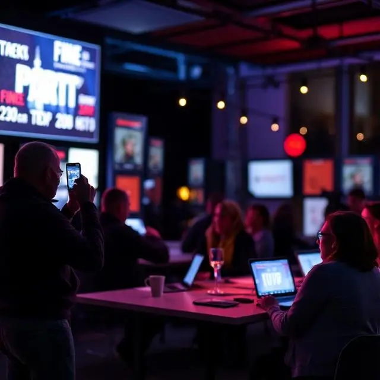
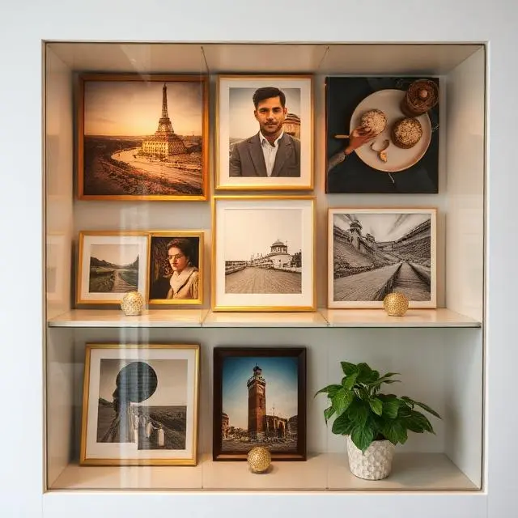

Kuvagalleria – valokuvaus, mediataidot ja luova toiminta
Kuvagalleriassamme pääset tutustumaan jäsentemme projekteihin ja hetkiin, joissa yhdistyvät valokuvaus, mediataidot ja luova toiminta. Galleria esittelee kerhon työpajojen, tapahtumien ja mediaprojektien satoa sekä antaa inspiraatiota omien taitojen kehittämiseen.




